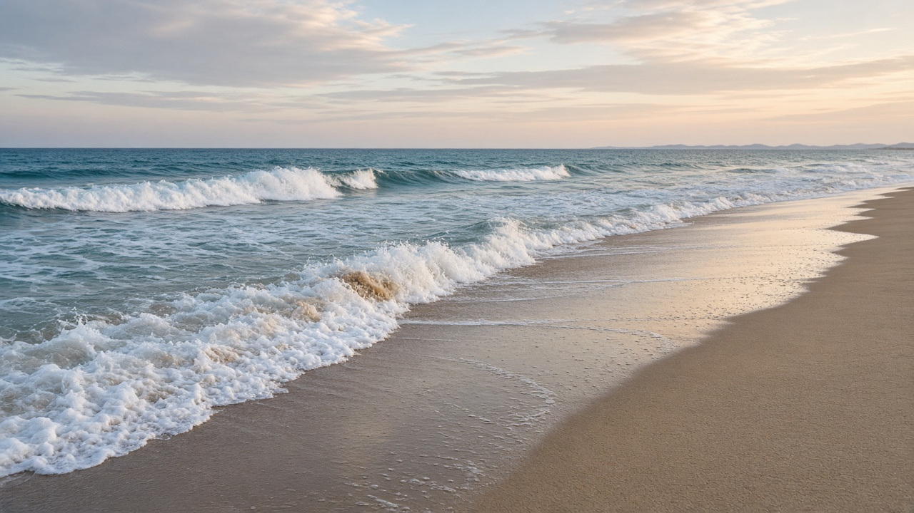
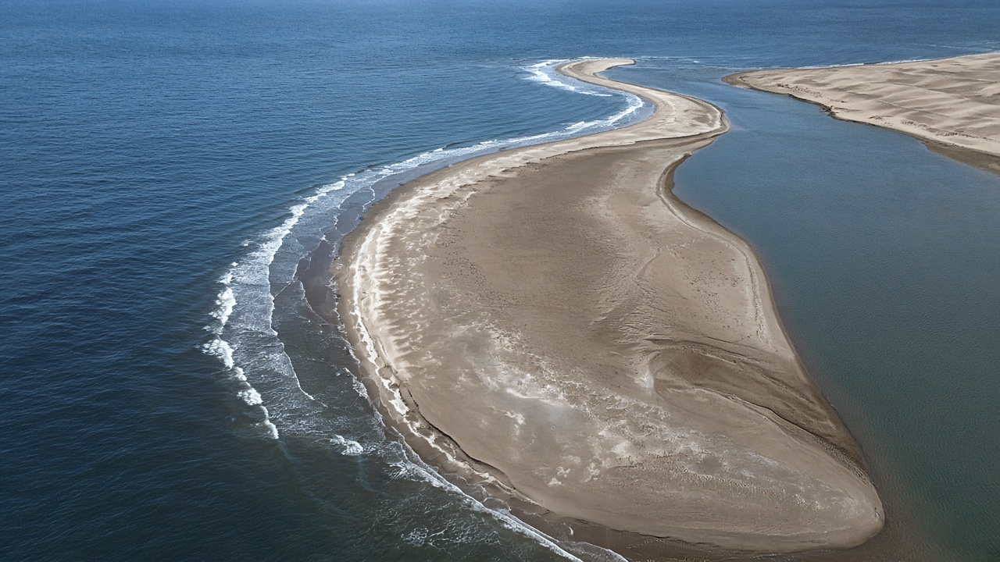
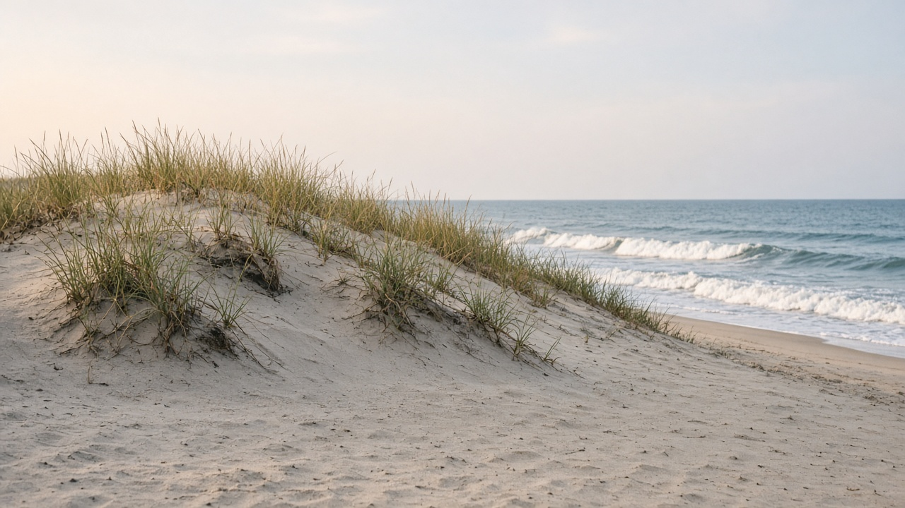

Waves, Tides, and Coastal Processes
Published on August 20, 2026

Waves and tides continually reshape the thin strip where land meets sea. Wind waves grow with fetch and storm duration, then shoal, break, and run up beaches, transferring energy that sorts sand, cobble, and mud. Tides, forced by the gravitational pull of the Moon and Sun, flood and drain estuaries twice a day in most regions, exposing mudflats, mixing salt and fresh water, and setting the rhythm of ports and fishing. Long-period swell can travel across entire ocean basins, so a distant cyclone may still deliver heavy surf to a coast that never saw the storm’s wind.
Coastal processes convert that energy into landforms. Longshore currents move sediment alongshore, building spits, barrier islands, and tidal inlets; storm surges and monsoon setup pile water against low deltas and can overtop dikes. Tsunami waves, generated by undersea earthquakes or landslides, are rare but can inundate far inland on gently sloping shelves such as those around the Bay of Bengal. Human structures—seawalls, groynes, ports, and sand mining—interrupt the natural budget of sediment, often starving downdrift beaches while protecting a single property. Mangrove roots and coral reefs dissipate wave energy before it reaches villages, which is why living shorelines are engineering as well as ecology.
Reading waves and tides is essential for navigation, early warning, and shoreline design. Tide gauges, wave buoys, and satellite altimeters now feed forecasts that fishing boats and coastal cities use daily. Planners who ignore the sediment cell, the tidal prism of an estuary, or the extra water height of a cyclone-plus-high-tide event lock communities into chronic flooding. Education that treats the coast as a moving system—not a fixed property line—helps people choose setbacks, restore dunes and intertidal vegetation, and keep ports open without simply pushing erosion onto the next village.

लहर र ज्वारभाटाले जमिन र समुद्र मिल्ने पातलो पट्टी निरन्तर आकार दिन्छन्। हावाका लहर फेट्च र आँधी अवधिअनुसार बढ्छन्, त्यसपछि उथलिएर भाँचिन्छन् र समुद्र तटमा दौडिन्छन्, बालुवा, गेग्रान र माटो छुट्याउने ऊर्जा सार्छन्। चन्द्रमा र सूर्यको गुरुत्वाकर्षणले चलाइने ज्वारभाटाले अधिकांश क्षेत्रमा दिनमा दुई पटक मुहान भर्छ र खाली गर्छ, हिलो मैदान देखाउँछ, नुन र ताजा पानी मिसाउँछ र बन्दरगाह तथा माछा मार्ने लय तय गर्छ। लामो-अवधि स्वेल पूरा महासागर बेसिन पार गर्न सक्छ, त्यसैले टाढाको चक्रवातले कहिल्यै हावा नदेखेको तटमा पनि भारी सर्फ पठाउन सक्छ।
तटीय प्रक्रियाले त्यो ऊर्जालाई भू-आकृतिमा बदल्छ। समानान्तर धारा तलछट किनारासाथ सार्छ, स्पिट, अवरोध टापु र ज्वारीय मुख बनाउँछ; आँधी उछाल र मनसुन सेटअपले होचो डेल्टामा पानी थुपार्छ र बाँध नाघ्न सक्छ। समुद्री भूकम्प वा पहिरोले जन्मिएका सुनामी लहर दुर्लभ छन् तर बंगालको खाडी वरपरका मन्द ढलान शेल्फमा टाढा भित्रसम्म डुबाउन सक्छन्। मानव संरचना—समुद्री पर्खाल, ग्रोइन, बन्दरगाह र बालुवा उत्खनन—प्राकृतिक तलछट बजेट तोड्छन्, प्रायः एउटा सम्पत्ति जोगाउँदै तल्लो तटका समुद्र तट भोकमरीमा पार्छन्। म्यानग्रोभ जरा र मुंगा चट्टानले गाउँसम्म पुग्नुअघि लहर ऊर्जा क्षय गर्छन्, त्यसैले जीवित किनारा पारिस्थितिकी मात्र होइन इन्जिनियरिङ पनि हो।
लहर र ज्वारभाटा पढ्नु नौवहन, पूर्वसूचना र किनारा डिजाइनका लागि अपरिहार्य छ। ज्वार गेज, लहर बोया र उपग्रह उचाइमिति अहिले माछा मार्ने डुंगा र तटीय शहरले दैनिक प्रयोग गर्ने पूर्वानुमान खुवाउँछन्। तलछट कक्ष, मुहानको ज्वारीय आयतन वा चक्रवात-सहित-उच्च-ज्वारको अतिरिक्त पानी उचाइ बेवास्ता गर्ने योजनाकारले समुदायलाई दीर्घकालीन बाढीमा बाँध्छन्। तटलाई स्थिर सम्पत्ति रेखा होइन चलिरहेको प्रणाली मानेर शिक्षा दिँदा मानिसले सेटब्याक छान्न, टिब्बा र ज्वारीय वनस्पति पुनर्स्थापना गर्न र अर्को गाउँमा क्षरण नधकेलेर बन्दरगाह खुला राख्न सक्छन्।

तरंगें और ज्वार-भाटा भूमि और समुद्र के मिलन की पतली पट्टी को निरंतर आकार देते हैं। हवा की तरंगें फेच और तूफान अवधि के साथ बढ़ती हैं, फिर उथली होकर टूटती और समुद्र तट पर दौड़ती हैं, बालू, कंकर और मिट्टी छाँटने वाली ऊर्जा स्थानांतरित करती हैं। चंद्रमा और सूर्य के गुरुत्वाकर्षण से चालित ज्वार अधिकांश क्षेत्रों में दिन में दो बार मुहाने भरते और खाली करते हैं, कीचड़ मैदान दिखाते, खारे और मीठे जल मिलाते और बंदरगाह तथा मछली पकड़ने की लय तय करते हैं। दीर्घ-अवधि स्वेल पूरे महासागर बेसिन पार कर सकती है, इसलिए दूर का चक्रवात उस तट पर भी भारी सर्फ भेज सकता है जिसने तूफान की हवा कभी नहीं देखी।
तटीय प्रक्रियाएँ उस ऊर्जा को भू-आकृतियों में बदलती हैं। समानांतर धाराएँ तलछट किनारे के साथ ले जाती हैं, स्पिट, अवरोध द्वीप और ज्वारीय मुख बनाती हैं; तूफानी उछाल और मानसून सेटअप नीचा डेल्टा के विरुद्ध जल जमा करते हैं और बाँध लाँघ सकते हैं। समुद्री भूकंप या भूस्खलन से जन्मी सुनामी तरंगें दुर्लभ हैं पर बंगाल की खाड़ी के आसपास की मंद ढलान शेल्फ पर दूर भीतर तक डुबा सकती हैं। मानव संरचनाएँ—समुद्री दीवार, ग्रोइन, बंदरगाह और बालू खनन—प्राकृतिक तलछट बजट तोड़ती हैं, अक्सर एक संपत्ति बचाते हुए निचले तट के समुद्र तट भूखे छोड़ती हैं। मैंग्रोव जड़ें और प्रवाल भित्तियाँ गाँव तक पहुँचने से पहले तरंग ऊर्जा क्षय करती हैं, इसलिए जीवित किनारा पारिस्थितिकी ही नहीं अभियांत्रिकी भी है।
तरंग और ज्वार पढ़ना नौवहन, पूर्वचेतावनी और किनारा डिज़ाइन के लिए आवश्यक है। ज्वार गेज, तरंग बोया और उपग्रह तुंगतामिति अब मछली पकड़ने वाली नावों और तटीय शहरों के दैनिक पूर्वानुमान को खिलाती हैं। तलछट कक्ष, मुहाने का ज्वारीय आयतन या चक्रवात-सहित-उच्च-ज्वार की अतिरिक्त जल ऊँचाई अनदेखी करने वाले योजनाकार समुदायों को दीर्घकालिक बाढ़ में बाँधते हैं। तट को स्थिर संपत्ति रेखा नहीं गतिशील प्रणाली मानकर शिक्षा देने पर लोग सेटबैक चुन सकते, टिब्बा और ज्वारीय वनस्पति पुनर्स्थापित कर सकते और अगले गाँव पर क्षरण धकेले बिना बंदरगाह खुले रख सकते हैं।